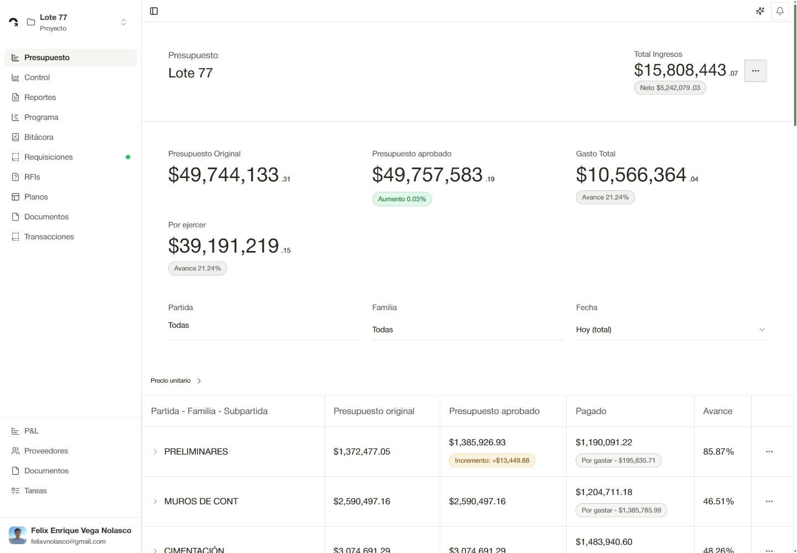
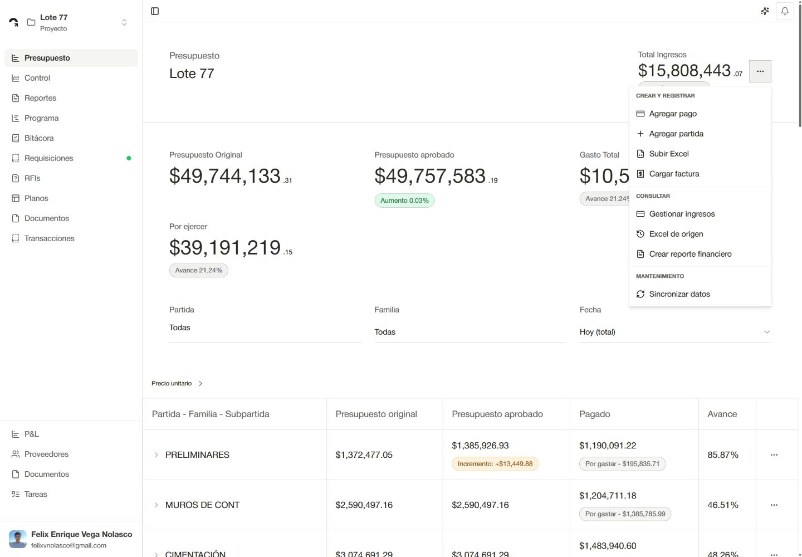
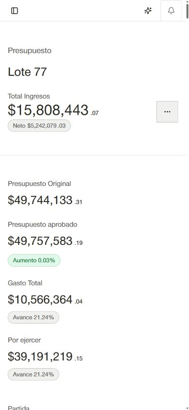
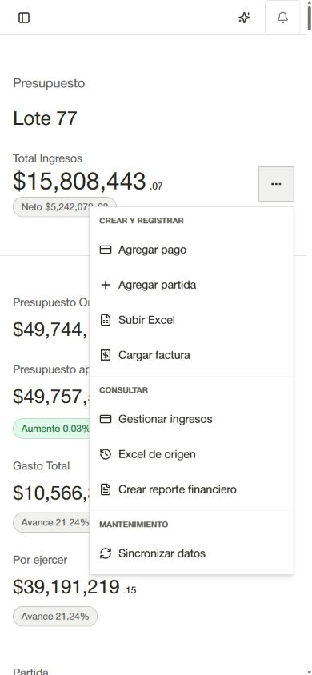
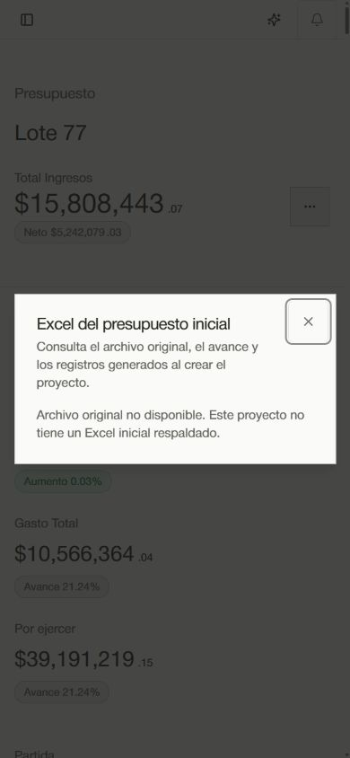

P01 · Acciones de presupuesto: implementación real
18 de noviembre de 2026 · Capturas nuevas de la aplicación local. Estas imágenes están separadas de las maquetas de la auditoría.
Resultados y alcance de la validación
Aplicación real · escritorio · 1440 × 1000


Aplicación real · móvil · 390 × 844



Aplicación real · otros anchos
1024: cabecera · 1024: menú · 320: cabecera · 320: menú


Verificación aislada de permisos y estado
Componente real con datos ficticios locales, sin autenticación ni backend y con todas las escrituras bloqueadas. Estas imágenes no representan usuarios o proyectos reales.
Viewer: solo consultas · Presupuesto incompleto: Excel disponible